Las tres vistas principales: Alzado, Planta y Perfil
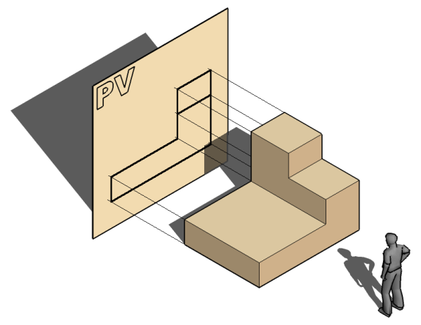
Las vistas son las proyecciones de las caras de un objeto sobre diferentes planos (como si fueran paredes imaginarias). Aunque un objeto tiene seis caras, para definirlo por completo normalmente nos bastan tres vistas principales:
| Vista | ¿Desde dónde miramos? | ¿Qué vemos? | ¿Para qué sirve? |
|---|---|---|---|
| ALZADO | De frente hacia el objeto | La parte delantera del objeto | Es la vista principal. Nos da la mayor información del objeto. |
| PLANTA | Desde arriba hacia el objeto | La parte de arriba del objeto | Nos muestra cómo es el objeto por encima. |
| PERFIL | Desde un lado (izquierdo o derecho) hacia el objeto | El lateral del objeto | Nos enseña la profundidad y detalles de los lados. |
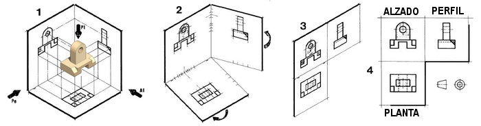
Estas tres vistas nos permiten entender todas las dimensiones del objeto: su altura, anchura y profundidad.
Ejemplo sencillo:
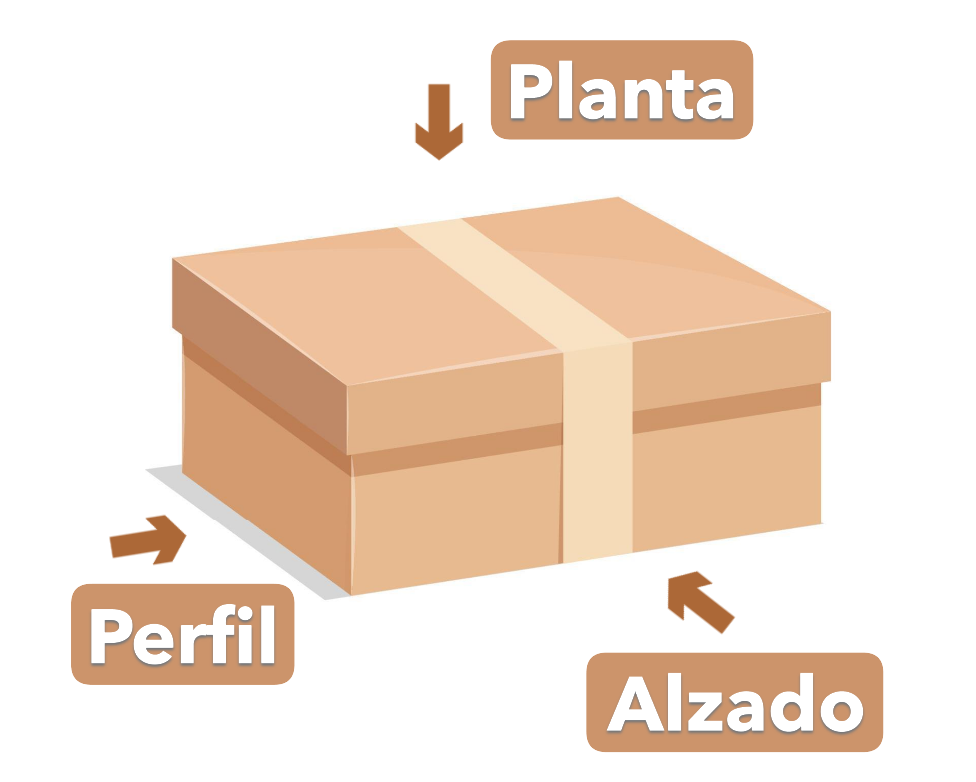
Imagina una caja de zapatos:
- Alzado: ves la parte donde está la tapa y el dibujo de la caja.
- Planta: ves el rectángulo de la tapa desde arriba.
- Perfil: ves el lateral de la caja, con su grosor y altura.
Estas tres vistas juntas nos permiten entender cómo es el objeto completo 📦, aunque el papel sea plano📝 .
Pasos para la obtención de las tres vistas principales
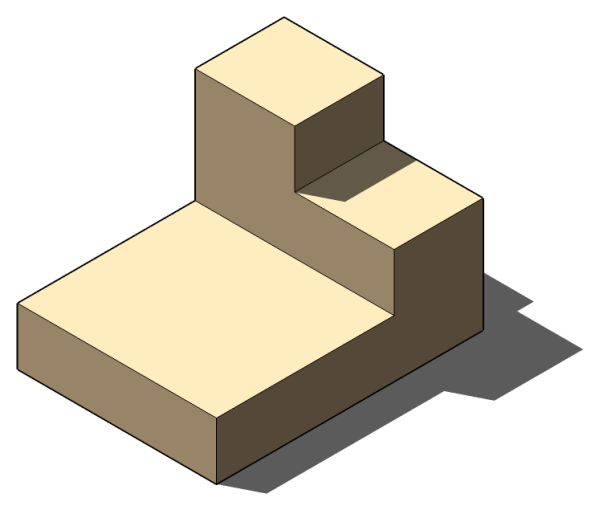
Vamos a imaginar que nos piden que dibujemos las vistas que representan la figura de al lado .
Paso 1: Elegir el Alzado
El Alzado además de ser la proyección realizada sobre el Plano Vertical (PV), es la vista más importante de todas, porque:
-
Debe proporcionar la mayor cantidad de información sobre la pieza.
-
Hay que dibujarla siempre y debería ser la primera en dibujarse.
Elegir el Alzado, es una tarea sumamente importante.
Importante
Hay que elegir como Alzado la vista que proporcione mayor información de la pieza.
Después de elegir el Alzado, nos tendremos que «situar» mentalmente, delante de la pieza y obtener las proyecciones sobre el Plano Vertical (PV) de cada uno de los planos que conforman la pieza.
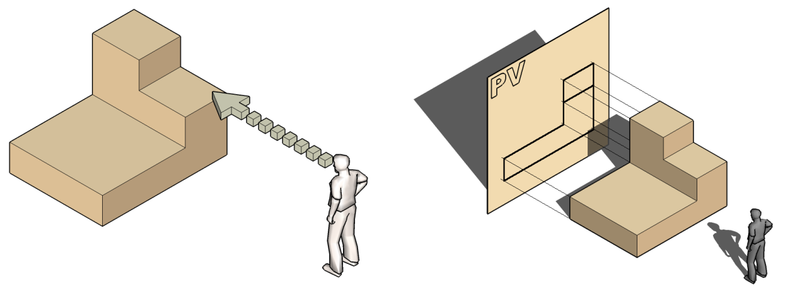
Según esto, el Alzado que dibujaremos en el papel sería:
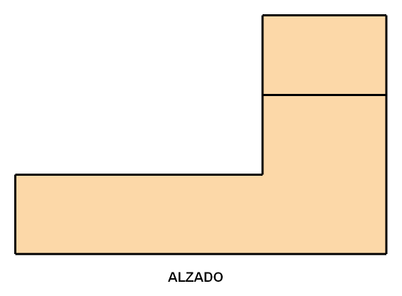
Paso 2. Búsqueda de la Planta
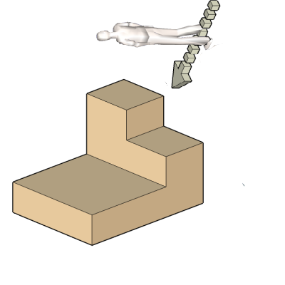
Para obtener la Planta, a partir de la situación utilizado para sacar el Alzado, subiremos mentalmente encima de la pieza y proyectaremos (miramos) hacia abajo, hacia el Plano Horizontal.
La vista obtenida desde esta posición, es la Planta de la pieza
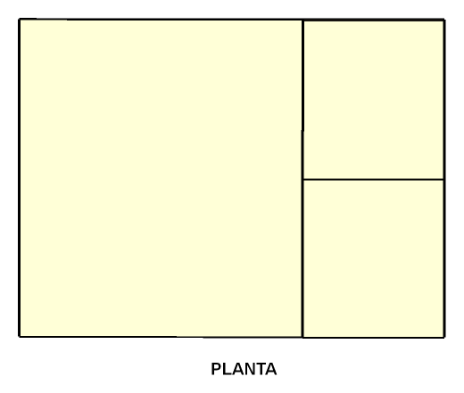
Paso 3. Representación del Perfil
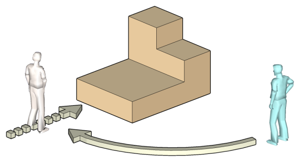
La vista llamada Perfil, es la proyección de la pieza que se realiza sobre el Plano de Perfil (PP).
Para obtener el Perfil izquierdo, tendremos que cambiar nuestra posición, nos tendremos que dirigir a la izquierda y proyectar sobre al plano de Perfil. Tendremos el Perfil izquierdo proyectado sobre el plano derecho.
Según esto, el perfil que encontraríamos sería:
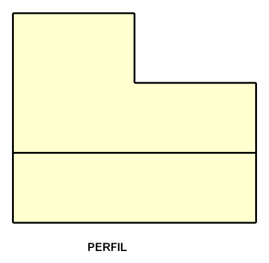
La colocación de las vistas
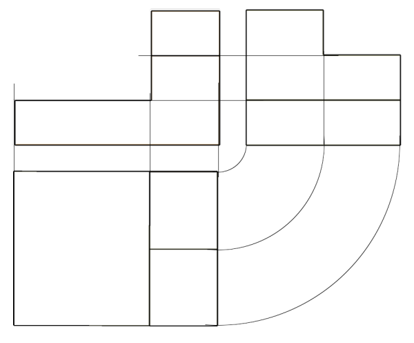
Para que todo el mundo pueda interpretar el plano de la misma manera, la posición de las vistas sigue una regla internacional (en Europa usamos el Sistema Europeo). La colocación es siempre la misma:
- El Alzado se dibuja en primer lugar.
- La Planta se dibuja justo debajo del alzado.
- El Perfil:
- Perfil Izquierdo se dibuja justo a la derecha del alzado.
- Perfil Derecho se dibuja justo a la izquierda del alzado.
Y así es como se presentarían finalmente:
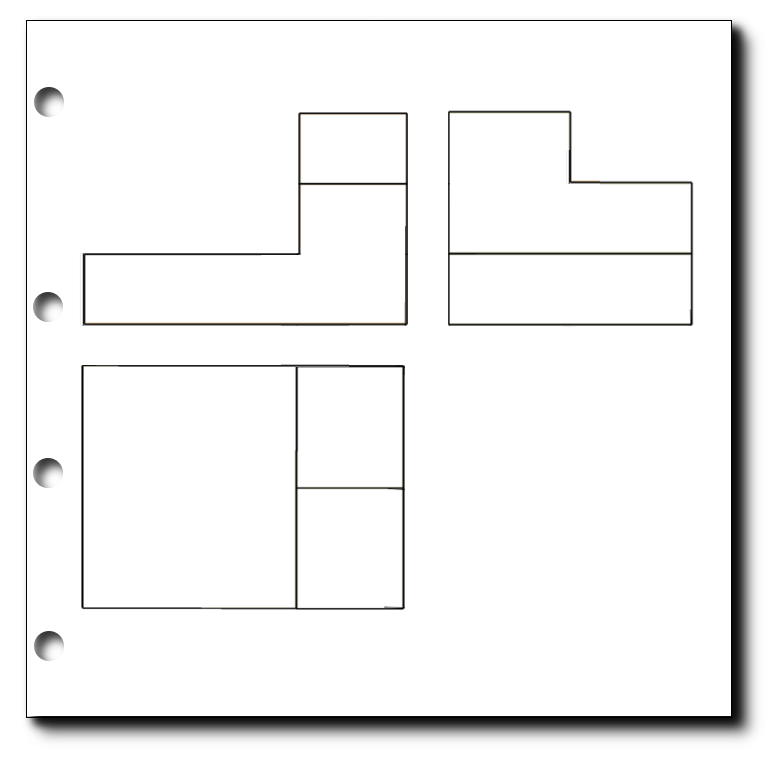
Según eso, hemos visto cómo las vistas (alzado, planta y perfil) adoptan unas posiciones dentro de la lámina en las que el perfil, está a la derecha del alzado y la planta, debajo del alzado.
Correspondencia entre las tres vistas
Cuando dibujamos un objeto en un plano, usamos tres vistas: la vista de frente (alzado), la vista desde arriba (planta) y la vista de lado (perfil). Si te para a pensar, hay ciertas medidas que coinciden en distintas vistas:
-
La anchura (lo ancho que es el objeto) debe ser igual en la vista de frente (alzado) y en la vista desde arriba (planta ).
-
La altura (lo alto que es el objeto) debe coincidir en la vista de frente (alzado) y de lado (perfil).
-
La profundidad o longitud (lo que mide de atrás hacia adelante) debe ser la misma en la vista desde arriba (planta) y la vista de lado (perfil).
Para ayudar a que estas dimensiones encajen, a veces se dibuja una línea inclinada a 45 grados llamada línea de inglete. Esta línea ayuda a "traspasar" las medidas desde la vista de arriba a la vista de lado, asegurando que todo cuadre bien.
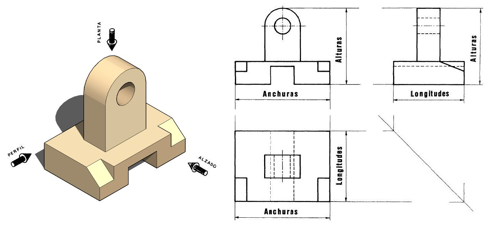
Tabla resumen de correSpondencia de medidas entre vistas
| Alzado (frontal) | Planta (arriba) | Perfil (lado) | |
|---|---|---|---|
Altura  |
X | X | |
Anchura  |
X | X | |
Profundidad o longitud  |
X | X |